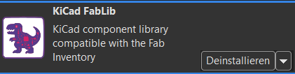
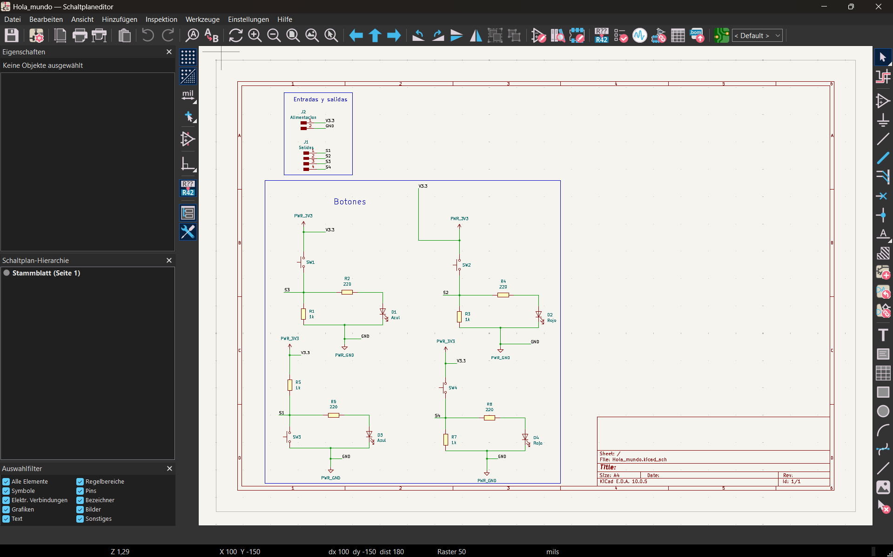
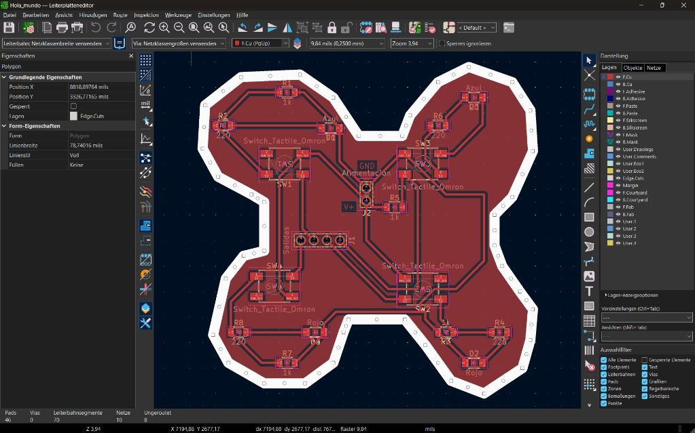

Reporte de Proyecto: Diseño y Ruteo de PCB en KiCad
Universidad: Universidad Iberoamericana Puebla
Carrera: Ingeniería mecatrónica
Asignatura: Producción electrónica
Participantes del Equipo
| Nombre Completo | Matrícula |
|---|---|
| Aldo Ibrahim Alvarez Fernández | 204916 |
| Rodrigo Pacheco Valdez | 195234 |
Tabla de Contenidos
1. Introducción y Objetivos.
2. Instalación de Plugins (KiCad FabLib).
3. Diseño del Esquema Eléctrico.
3.1 Selección de Componentes.
3.2 Organización y Conexiones.
4. Diseño de la Placa de Circuito Impreso (PCB Layout).
4.1 Definición del Contorno (Edge.Cuts a 2.0 mm).
4.2 Enrutado y Ancho de Pistas (0.4 mm).
4.3 Explicación de las Capas del Proyecto.
5. Exportación de Datos para Fabricación.
6. Conclusiones.
1. Introducción y Objetivos
Este proyecto describe el proceso que se llevo a cabo en la materia de Producción Electrónica para diseñar, cortar y procesar una placa de cobre a una placa de circuito impreso (PCB) utilizando la herramienta de software libre KiCad 10.
Objetivos:
- Desarrollar las habilidades y conocimientos básicos en la plataforma KiCad para la elaboración de PCB desde cero.
- Aplicar dichos conocimientos en proyectos de esta y otras materias a futuro como sustituto de la placa de pruebas (protoboard) para routing y conexiones de circuitos.
- Diseñar un circuito funcional con 4 pulsadores táctiles (
Switch_Tactile_Omron), 4 LEDs indicadores (Azul y Rojo) con sus respectivas resistencias, y conectores de alimentación/salida. - Definir una geometría de borde personalizada no rectangular utilizando la capa de corte.
- Aplicar normas de diseño Gerber y criterios de enrutado (ancho de pistas de 0.4 mm y ancho de línea de borde de 2.0 mm).
- Exportar la documentación de fabricación mediante el plugin KiCad FabLib.
2. Instalación de Plugins (KiCad FabLib)
Se agregó el complemento KiCad FabLib para disponer de una biblioteca estandarizada de componentes, símbolos y footprints utilizados comúnmente en entornos Fab Lab, facilitando el diseño y la fabricación de PCB.

Pasos de Instalación:
- Abrir la ventana principal de KiCad.
- Ingresar al Gestor de Complementos, Plataformas y Bibliotecas (Plugin and Content Manager / PCM).
- Buscar
KiCad FabLibo agregar el repositorio correspondiente. - Hacer clic en Instalar y presionar Aplicar Cambios.
- Reiniciar el editor de PCB.
3. Diseño del Esquema Eléctrico (Schematic Editor)
En el módulo Editor de Esquemas, se construyó la lógica eléctrica del proyecto.

3.1 Selección de Componentes
Se seleccionaron e incorporaron los siguientes símbolos y footprints:
* Pulsadores (4 unidades): SW1, SW2, SW3, SW4 (Switch_Tactile_Omron).
* Diodos LED (4 unidades):
* D1, D3: LEDs Azules (Azul).
* D2, D4: LEDs Rojos (Rojo).
* Resistencias:
* Resistencias de paso/limitación de $220\,\Omega$: R2, R4, R6, R8.
* Resistencias de pull-down de $1\,\text{k}\Omega$: R1, R3, R5, R7.
* Conectores de Interfaz:
* J1: Conector de Salidas de 4 pines (Salidas: S1, S2, S3, S4).
* J2: Conector de Alimentación de 2 pines (Alimentación: V3.3 / V+ y GND).
3.2 Organización y Conexiones
El diseño se estructuró mediante bloques funcionales:
1. Bloque Entradas y Salidas: Agrupa las clemas/cabezales J1 y J2.
2. Bloque Botones: Agrupa las cuatro etapas de conmutación. Cada botón envía su señal de salida (S1–S4) al conector J1 al presionarse y polariza directamente el LED correspondiente. Se emplearon etiquetas globales/locales (PWR_3V3, PWR_GND, V3.3, GND) para mantener un esquema limpio y legible.
4. Diseño de la Placa de Circuito Impreso (PCB Layout)
Una vez transferida la lista de redes al editor de PCB, se procedió al posicionamiento de componentes y ruteo de pistas.

Figura 2: Vista del trazado de la PCB con plano de masa y contorno en X.
4.1 Definición del Contorno (Edge.Cuts a 2.0 mm)
- Se diseñó un contorno geométrico personalizado de 4 lóbulos simétricos en forma de "X".
- Capa asignada:
Edge.Cuts. - Ancho de línea: $78.74016\,\text{mils} \approx \mathbf{2.0\,\text{mm}}$, garantizando la visibilidad adecuada para el fresado de la placa en el proceso de ruteado CNC.
4.2 Enrutado y Ancho de Pistas (0.4 mm)
- Ancho de pista por defecto / señales: Se configuró un ancho de pista de $0.4\,\text{mm}$ ($\approx 15.75\,\text{mils}$) en la clase de red principal, adecuado para el manejo de señales de control e iluminación LED sin caídas térmicas ni de tensión apreciables.
4.3 Explicación de las Capas del Proyecto
En el panel lateral de capas se utilizan las siguientes capas fundamentales:
| Capa | Nombre Completo | Función en la Placa |
|---|---|---|
F.Cu |
Front Copper (Cobre Superior) | Aloja las pistas principales de señal y el plano de masa superior (color rojo). |
Edge.Cuts |
Board Outline (Corte del Borde) | Delimita el perímetro exacto que la fresadora o láser recortará para la PCB final (ancho de $2.0\,\text{mm}$). |
User.3 |
Cuts (Cortes) | Establece los cortes que se quieren realizar en la PCB. |
5. Exportación de Datos para Fabricación
- Se ejecutó la verificación de reglas de diseño (DRC - Design Rules Check) para garantizar cero cortocircuitos ni pistas incompletas.
- Mediante el icono de FabLib, se generó la carpeta de manufactura con:
- Archivos Gerber (
.gbr):F_Cu.gbr,Edge_Cuts.gbr,User_3.gbr.
6. Conclusiones
- Se logró diseñar exitosamente una PCB totalmente funcional respetando las reglas de diseño para la manipulación manual de prototipos (pistas de 0.4 mm).
- La implementación del contorno en la capa
Edge.Cutscon grosor de 2.0 mm permitió definir un chasis estético y adaptado al factor de forma deseado. - La integración de FabLib en KiCad simplificó la creación de la PCB al proporcionar componentes y huellas estandarizadas, permitiendo un diseño más rápido, preciso y adecuado para su posterior fabricación.